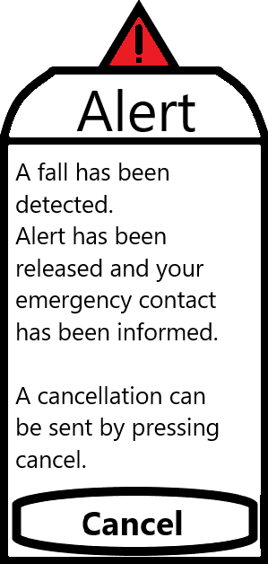
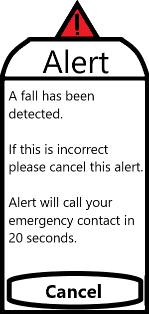
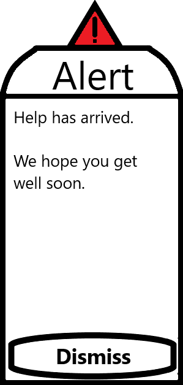

Assist in Reflection
by Magician's Assistants
Menu
Home
Team Profile
Project Description
Overview
Detailed Description
Artifacts
Skills and Jobs
Group Reflection
Artifacts
Module - Bathroom Checklist
Prototype of Assist in Reflection - Bathroom Checklist
Module - Medicine Tracker
Prototype of Assist in Reflection - Medicine Tracker
UI/UX Mockups
  